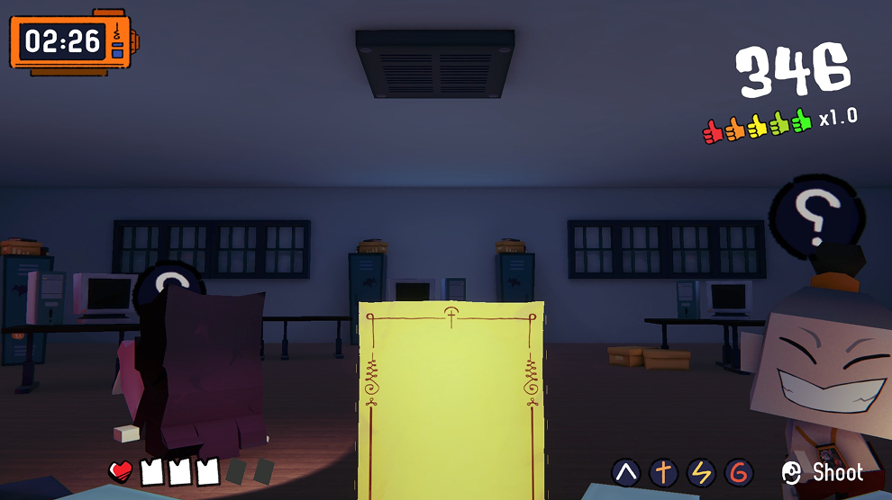
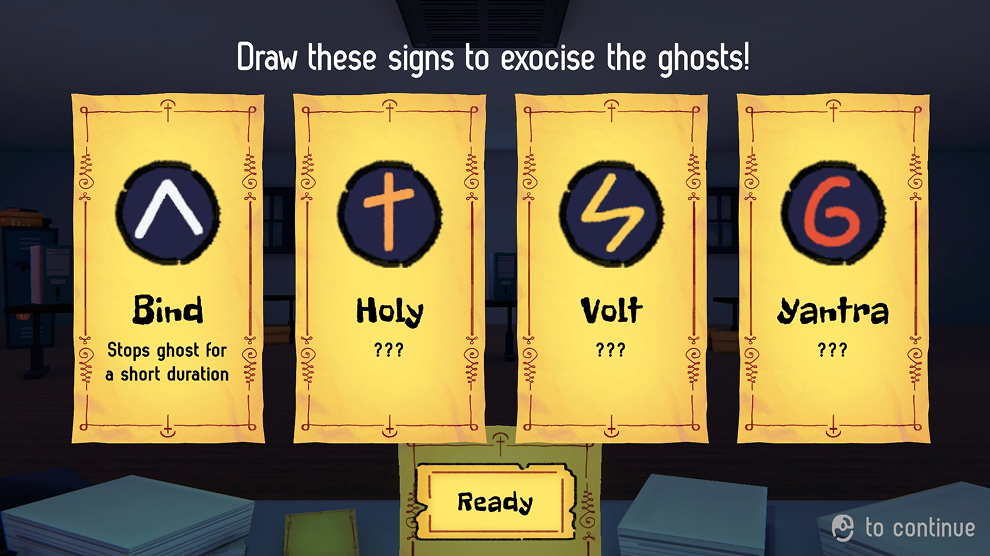
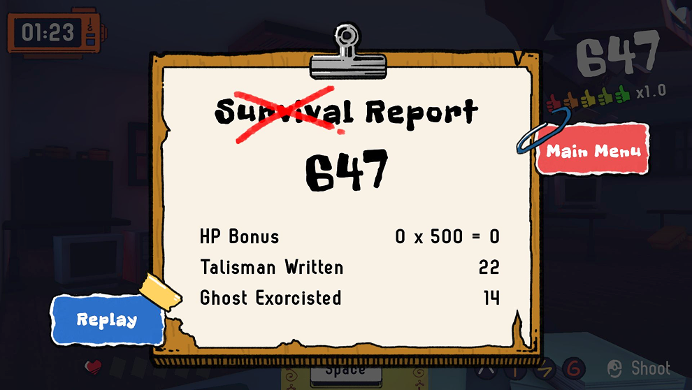

These are my game!
Click to select your game.
Yao Ying Yan
October 2025
An arcade shooter game that player draw symbols on a Post-it and use it as a talisman to fight ghosts.



Bunyapon Chaiongkarn
These are my game!
Click to select your game.
October 2025
An arcade shooter game that player draw symbols on a Post-it and use it as a talisman to fight ghosts.


